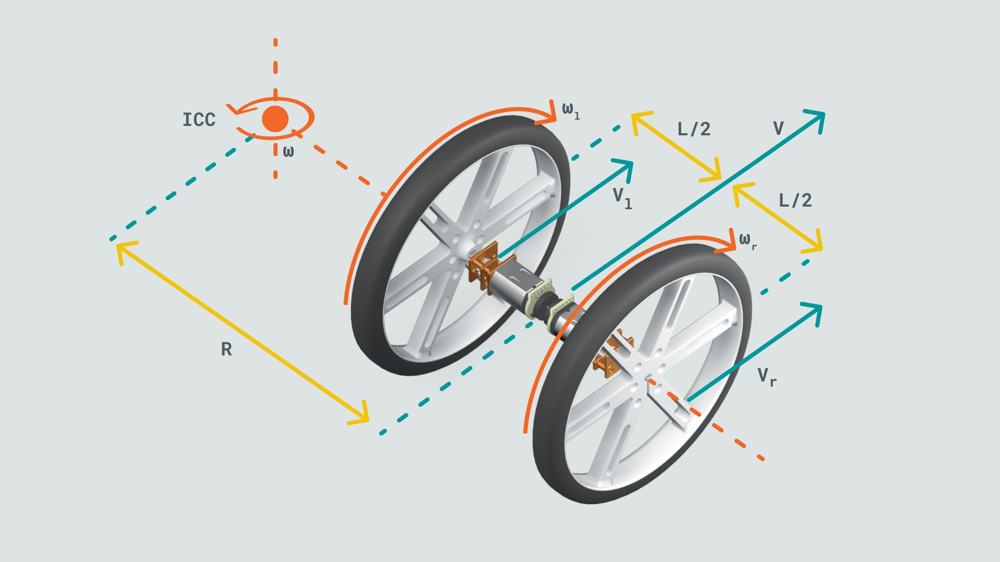

Webcam Controlled Rover
.png)
Big Idea
The idea is to localize and control a mobile rover in an arena with the help of a webcam connected to the personal computer running matlab code. The webcam is placed on top of the arena facing down to cover the entire arena.
Mobile Robot Kinematics
The basics of Mobile Robot kinematics helps control the robot. Consider the image below
The kinematic equations are shown below
- ωl - angular velocity of the left wheel
- ωr - angular velocity of the right wheel
- r - Radius of the wheel
- L - Distance between the wheels
- v - Total Linear velocity in the Forward direction
- ω - Angular velocity at point ICC (instantaneous center of curvature)
Working
- An image of the arena is captured using the webcam and is calibrated to obtain edge information.
- The rover is placed in the arena and is calibrated, the three circles on the robot helps obtain the position and orientation of the robot.
- Finally, the target block is calibrated on the arena.
- The rover and target block are kept on the arena to check if the features are detected i.e: the center of the circles in the rover, the front facing direction of the rover and the center of the target block in the arena.
- Finally, the motor controls are integrated with the image processing alogorithm to make the rover move to the target block, pick the block and drop it in a particular destination.
Working Video
The simulink block diagram and Matlab code, along with the required steps, are shown in the video below.